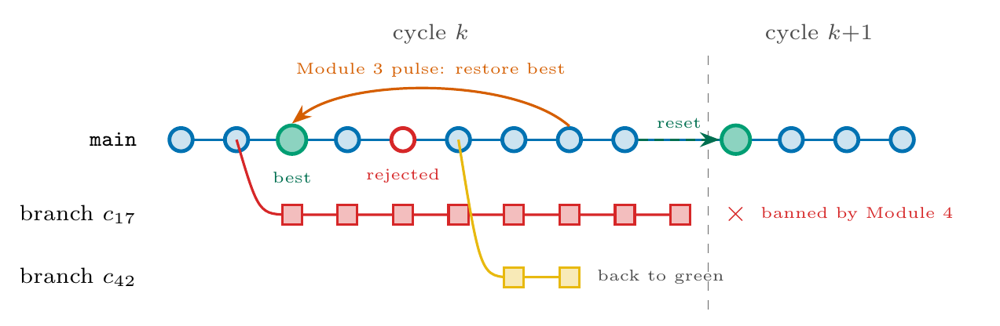
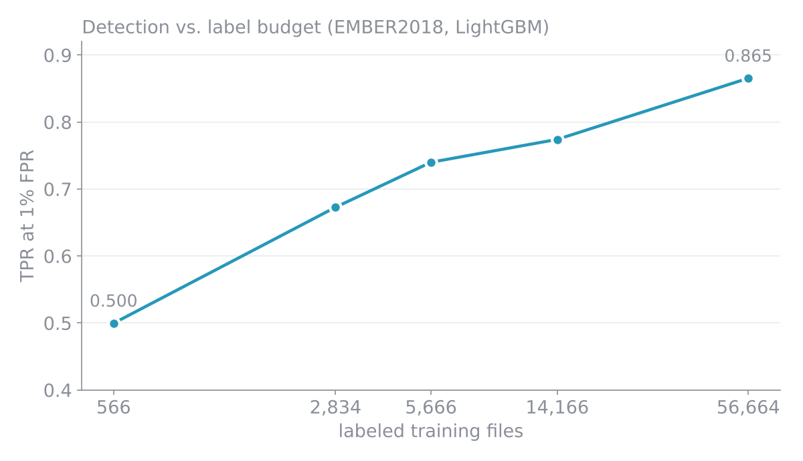
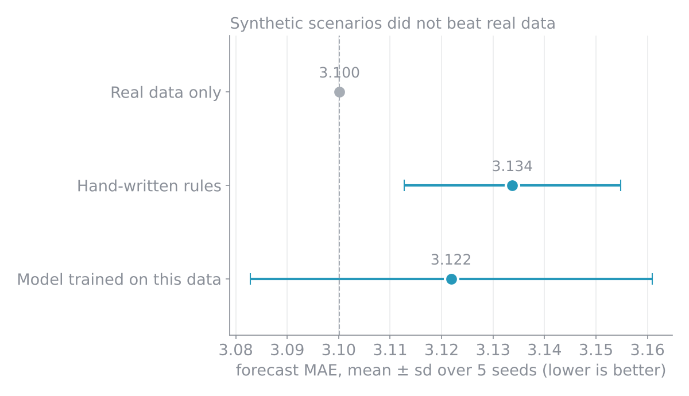

research FedVC A Git-style governance layer for federated learning: commits, per-client side branches, rollback and verdicts around unmodified FedAvg. Blockchain-federated learning Adaptive multi-metric aggregation for fair, cost-efficient fraud detection. Published in Applied Intelligence. applied ml Malware detection, quantized for CPU Semi-supervised malware detection on EMBER2018 under label scarcity, shipped as a 3.95× smaller INT8 ONNX model.  Synthetic scenarios for demand forecasting Do AI-generated demand scenarios improve retail forecasts? A GMM, LLM and hand-written comparison (null result).